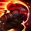

Campeon:

Minions: 125
Oro: 2200
Objetos: 4
Coste: 45
Golpea el suelo, causando daño y ralentizando a los enemigos.
Coste: 35
Escupe fuego en un área y gana un escudo temporal.
Coste: 55
Se lanza hacia adelante, derribando a los enemigos que golpea.
Ultimate
Coste: 100
Invoca un ariete que atraviesa el campo y lanza por el aire a los enemigos en su camino.
Destello

Teletransporte
Daño de ataque: 80
Daño mágico: 0
Defensa: 150
Velocidad de ataque: 0.6
Velocidad de movimiento: 335
Omnisucción: 20